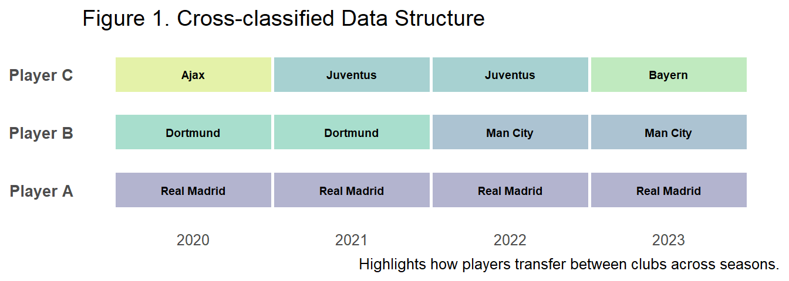
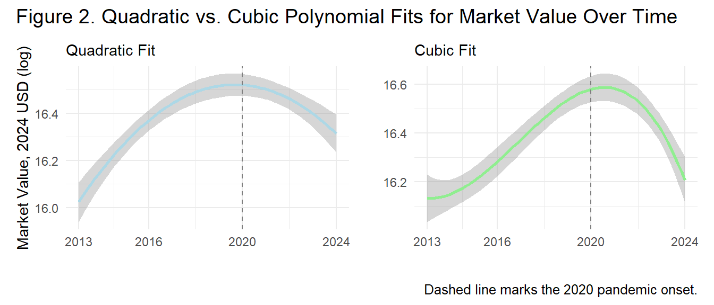
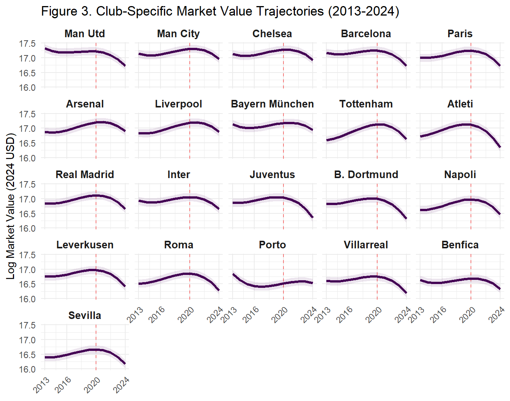
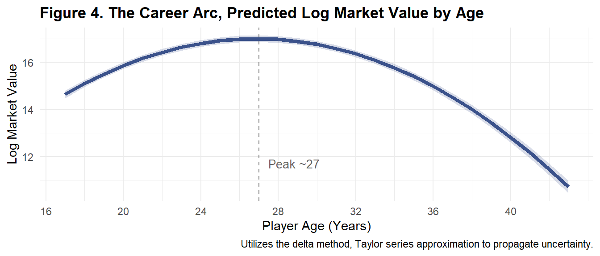
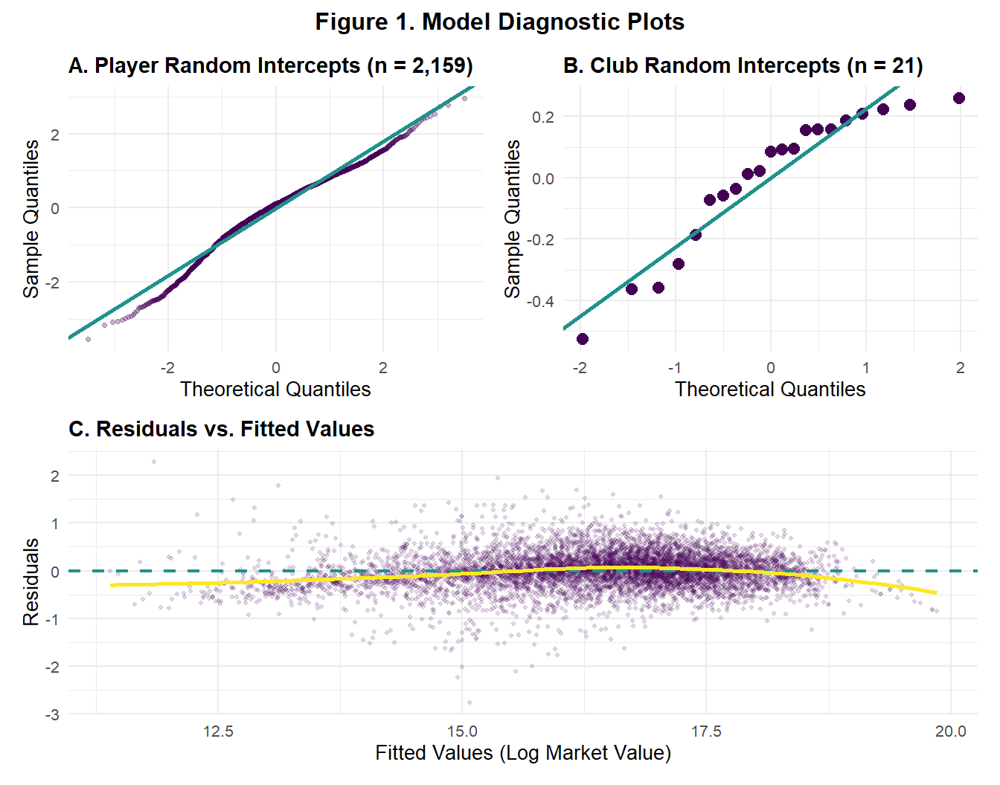
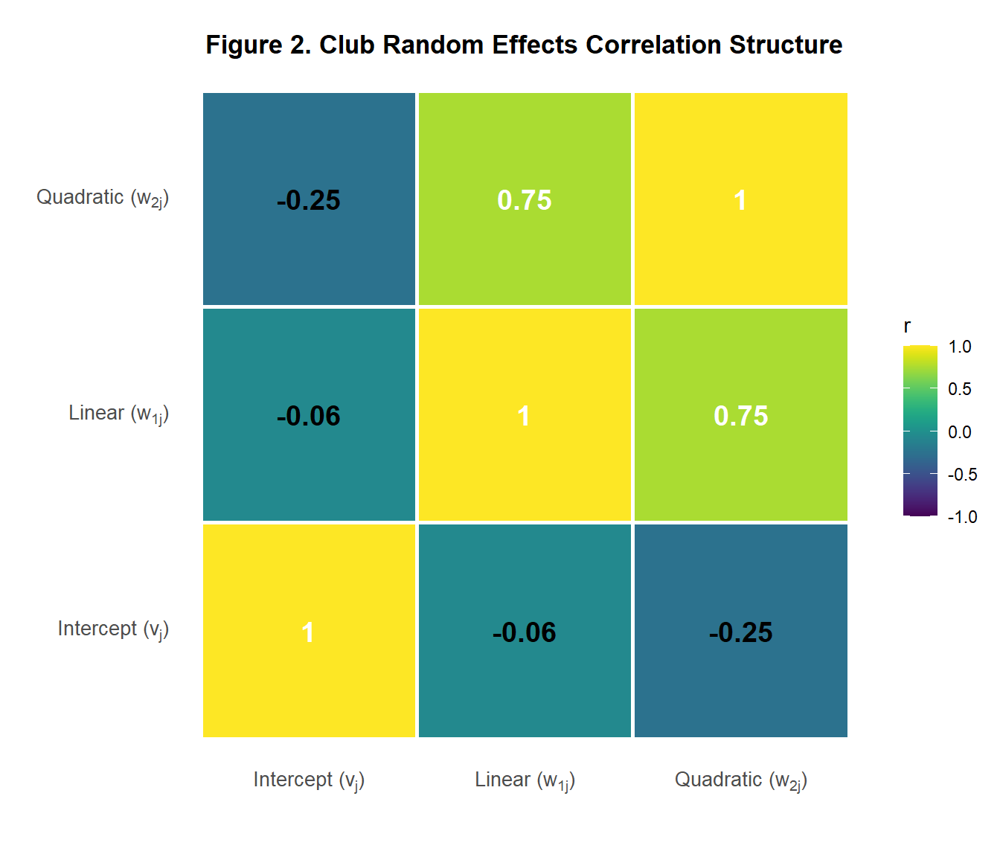

Player Market Value in Elite European Football
Introduction
The European football transfer market has evolved from a scouting exercise to a global financial industry generating €38bn in revenue (Deloitte, 2025). While key research identifies performance metrics like goals as drivers for player valuation (Frick, 2007), recent scholarship highlights non-performance factors such as brand visibility (Franck & Nüesch, 2012; Rosen, 1981). However, the market has recently bifurcated into a pre-2020 hyper-inflationary era (Poli et al., 2017), and a post-2020 pandemic correction (Drewes et al., 2021), with COVID-19 causing an estimated €8.7bn revenue shortfall (Deloitte, 2021). Using Transfermarkt estimates as validated proxies for transfer fees (Herm et al., 2014), we fit a cross-classified multilevel model to account for players transferring between clubs. We address this gap by fitting a cross-classified multilevel model to a decade of data (2013–2024), centering at the 2020 baseline to isolate pandemic impacts while accounting for player movements across clubs. Specifically, we investigate four critical dynamics:
- What non-linear “Boom and Bust” (i.e., economic expansion, sharp contraction) patterns characterize the transfer market’s evolution relative to the pandemic baseline?
- At what age does player market valuation reach its peak across the career trajectory?
- To what degree does squad status predict market value independent of performance?
- How does squad internationalization affect individual player market valuations?
Method
Sample and Data
We obtained data from Transfermarkt and UEFA official rankings using purposive sampling to select the top 21 European clubs based on 10-year averaged UEFA coefficient rankings1. Players from these clubs who had at least a full season during our time frame were selected resulting in a sample of 7,023 player-season observations from 2,159 unique players across. After listwise deletion of cases with missing citizenship data (~2% loss), players averaged 26.5 years of age (SD = 4.6).
Our outcome variable is the natural logarithm of the player’s inflation-adjusted yearly average market value (MV) in 2024 USD. Predictors are categorized into three distinct domains: (1) Player Characteristics, including age, height, position (Attacker, Midfielder, etc.), and citizenship status relative to the club (homegrown vs. foreign); (2) performance and status, captured by goals, assists, red/yellow cards, and playing time; and (3) club context, specifically the proportion of foreign players on the roster and the club’s UEFA coefficient, which serves as a proxy for recent competitive success and prestige. For further descriptive statistics on each variable see Appendix A, Table 1.
Model Specification
Our data exhibit a cross-classified structure where players (\(i\)) are observed repeatedly over time (\(t\)), but club membership (\(j\)) changes when players transfer between teams. This structure requires modeling players and clubs as crossed random effects rather than nested effects. Figure 1 visualizes our cross-classified design.
\[ \begin{aligned} \log(\text{MV})_{tij} = \quad & \gamma_{00} + u_i + v_j \\[6pt] & + (\gamma_1 + w_{1j})\text{Year}_t + (\gamma_2 + w_{2j})\text{Year}_t^2 + \gamma_3\text{Year}_t^3 \\[6pt] & + \gamma_4\text{Age}_{ti} + \gamma_5\text{Age}_{ti}^2 \\[6pt] & + \gamma_6\text{Minutes}_{tij} + \gamma_7\text{Goals}_{tij} + \gamma_8\text{Assists}_{tij} \\[6pt] & + \gamma_9\text{RedCards}_{tij} + \gamma_{10}\text{YellowCards}_{tij} \\[6pt] & + \gamma_{11}\text{Foreign}_{tj} + \gamma_{12}\text{UEFA}_{tj} \\[6pt] & + \beta_1\text{Height}_i + \beta_2\text{Citizen}_{ij} + \boldsymbol{\beta}'_{pos}\mathbf{D}^{pos}_i + \boldsymbol{\beta}'_{reg}\mathbf{D}^{reg}_i \\[6pt] & + \epsilon_{tij} \end{aligned} \]
The model includes three sources of random variation: \(u_i \sim N(0, \tau^2_u)\) captures persistent player reputation, \(v_j \sim N(0, \tau^2_v)\) captures baseline club prestige, and \(\epsilon_{tij} \sim N(0, \sigma^2)\) is the residual. The random slopes \(w_{1j}\) and \(w_{2j}\) allow clubs to differ in their linear and quadratic market value trajectories over time; together with \(v_j\), they follow a multivariate normal distribution with an unstructured covariance matrix.
Season year is centered at 2020 to isolate the pandemic’s structural impact, with cubic polynomial terms capturing the hypothesized “Boom-and-Bust” cycle (see Figure 2). Age is grand-mean centered (\(\bar{A} = 26.5\) years) with a quadratic term to model the biological career arc. Minutes played is standardized within each club-year to measure squad status independent of team rotation policies, while goals and assists are position-centered to capture performance relative to role-specific expectations.2 The vectors \(\mathbf{D}^{pos}_i\) and \(\mathbf{D}^{reg}_i\) contain dummy variables for player position (reference: Attacker) and region of origin (reference: Europe & Central Asia), respectively. Citizenship status (\(\text{Citizen}_{ij}\)) indicates whether player \(i\) holds citizenship in club \(j\)’s country.

Model Testing and Statistical Software
We employed sequential model building: (1) null model for ICC estimation; (2) linear time polynomial; (3) cubic time polynomial; (4) random slope for quadratic time at club level3; (5) player/club-season Level 1 predictors with quadratic age, and all code is found in Appendix B. Model selection and comparison was guided by Likelihood Ratio Tests (LRT) to evaluate the statistical significance of nested model improvements, and the Akaike Information Criterion (AIC) and Bayesian Information Criterion (BIC). Models yielding significant LRT results (p<.05) and lower values on both information criteria were retained for subsequent analysis. We describe each model in Appendix C, Table 1 alongside ICC, AIC, and BIC values.
All analyses were conducted in R version 4.5.2 using the lme4 1.1-37 package for mixed-effects model estimation with a Restricted Maximum Likelihood (REML) method. REML was selected to provide unbiased estimates of the variance components by accounting for the degrees of freedom lost when estimating fixed effects. We utilized the BOBYQA optimizer, which handles boundary constraints more effectively than the default Nelder-Mead optimizer, to ensure robust model convergence given the complexity of the random effects structure. Significance tests used Satterthwaite approximations via the lmerTest 3.1-3 package, as well as our own function to test random slope variances in Appendix B.
Results
The unconditional means (null) model revealed substantial clustering at the player level. Player-level variance accounted for 75% of the total variance (\(ICC_{player}=.75\)), while club-level variance accounted for 3% (\(ICC_{club}=.03\)), highlighting that persistent individual heterogeneity dominates market valuations. Regarding temporal dynamics, model comparisons favored a cubic fixed effect for season year over a linear specification, \(\chi^2(2)=45.66, p<.001\). We subsequently tested for club-specific heterogeneity in growth trajectories. A likelihood ratio test using a 50:50 mixture of \(\chi^2_1\) and \(\chi^2_2\) distributions confirmed that adding a random linear slope significantly improved model fit compared to the random-intercept model, \(\chi^2(5)=97.13, p<.001\), indicating that clubs differ significantly not only in their growth rates but also in the curvature of their market value trajectories. Consequently, our final best-fitting model incorporates these complex random effects alongside time-varying player and club predictors (\(\chi^2(19)=5626, p<.001\) compared to random slopes model). Model comparisons are shown in Appendix C. Our final model converged successfully with diagnostic plots confirming normality and homoscedasticity assumptions.
Market Evolution
Using raw polynomials centered at 2020 (\(t=0\)), our model mathematically pinpoints the moment the market froze. The linear coefficient at the 2020 baseline is effectively zero (\(\gamma_1 = 0.00, p = 0.93\)), indicating that at the exact onset of the pandemic, the relentless inflation of the previous decade came to a complete halt. The significant negative quadratic (\(\gamma_2 = -0.27\)) and cubic (\(\gamma_3 = -0.12\)) terms confirm the transition from a pre-2019 “Boom” into a structural correction. Figure 3 displays club specific trajectories, with panels ordered by baseline prestige. Elite clubs maintain higher valuations throughout, while trajectory curvature varies substantially. Clubs like Barcelona and Juventus show concave patterns indicating stagnation, whereas Arsenal and Liverpool display more resilient recovery and active value generation throughout the decade.

Biological Age
Our model predicts the peak age to be 26.94 for optimal transfer market value. We visualize in Figure 4 the biological constraints on valuation. The model predicts peak valuation at age 27, with values dropping approximately 1.5 log points by age 35, reflecting the market’s discount on older assets with limited resale potential.

Discussion
Our cross-classified multilevel model successfully addressed the methodological challenge of players transferring between clubs over time, properly partitioning variance between portable player reputation and club-level effects. The model converged without warnings, and diagnostic plots confirmed that distributional assumptions were reasonably satisfied i.e., player-level random intercepts adhered closely to normality, while minor tail departures in club-level effects were expected given only 21 Level 2 units. The residuals versus fitted values plot showed homoscedastic variance with no systematic patterns, indicating adequate specification.
The model effectively answered our four research questions. The cubic time polynomial captured the hypothesized boom-and-bust cycle, with the 2020 centering strategy isolating the pandemic’s structural impact. The quadratic age term confirmed the inverted-U career trajectory, identifying the peak valuation age. Squad status, operationalized through within-club standardized minutes, emerged as a stronger predictor than raw performance metrics, and the inclusion of region-of-origin effects revealed geographic valuation disparities.
Limitations
Several limitations warrant consideration. First, our sample comprises only elite clubs from top European leagues, limiting generalizability to lower divisions or non-European markets. Second, Transfermarkt valuations, while validated as proxies for transfer fees, reflect crowd-sourced estimates rather than actual transaction prices. Third, our model cannot capture unobserved factors such as injury history, contract length, or agent influence that likely affect valuations. Finally, the small number of clubs constrains the complexity of random effects we could estimate, preventing inclusion of a random cubic slope.
Implications
These findings carry practical implications for European football economics. Clubs may exploit the domestic discount by investing in homegrown talent development rather than paying recruitment premiums for foreign players of comparable quality. The strong signaling value of playing time suggests that loan strategies to increase minutes for young players could yield valuation returns beyond skill development alone. The Latin American premium reflects the continued marketability of South American talent in European football, potentially driven by historical success and brand recognition. As the market continues to recover from pandemic-era corrections, understanding these valuation dynamics becomes increasingly important for sustainable club financial planning.
References
Deloitte. (2021). Riding the challenge: Annual Review of Football Finance 2021. Deloitte Sports Business Group. https://www2.deloitte.com/uk/en/pages/sports-business-group/articles/annual-review-of-football-finance-europe.html
Deloitte. (2024). Annual review of football finance 2024: European football market revenue. https://www.deloitte.com/uk/en/about/press-room/deloitte-annual-review-of-football-finance-european-football-market-revenue.html
Drewes, M., Daumann, F., & Follert, F. (2021). Exploring the sports economic impact of COVID-19 on professional soccer. Soccer & Society, 22(1-2), 125-137. https://doi.org/10.1080/14660970.2020.1802256
Herm, S., Callsen-Bracker, H. M., & Kreis, H. (2014). When the crowd evaluates soccer players’ market values: Accuracy and evaluation attributes of an online community. Sport Management Review, 17(4), 484-492. https://doi.org/10.1016/j.smr.2013.12.006
Maas, C. J. M., & Hox, J. J. (2004). Robustness issues in multilevel regression analysis. Statistica Neerlandica, 58(2), 127-137. https://doi.org/10.1046/j.0039-0402.2003.00252.x
Poli, R., Ravenel, L., & Besson, R. (2017). Transfer market analysis (CIES Football Observatory Monthly Report No. 27). CIES Football Observatory. https://football-observatory.com/IMG/sites/mr/mr27/en/
Appendix A
Table 1: Variable Descriptions and Descriptive Statistics (N=7,168)
Appendix B
Annotated Model Syntax
library(lme4)
library(lmerTest)
# Model control for convergence
strict_control <- lmerControl(optimizer = "bobyqa")
#______________________________________________________________________________
# MODEL SPECIFICATION & FITTING
# 1. MODEL NULL (Unconditional Means)
# Purpose: Partition variance (calculate ICC) between Player and Club levels
model_null <- lmer(usd_revenue_2024_log ~ (1|player_id) + (1|club_id),
# the following repeats for all models captured as "..."
data = clean_player_df,
REML = TRUE,
control = strict_control)
# 2. MODEL LINEAR TIME TREND
# Purpose: Test for general linear inflation in market values
## (Base model for time)
model_time_linear <- lmer(usd_revenue_2024_log ~ season_year_c +
(1|player_id) + (1|club_id), ...) # Random Effects
# 3. MODEL CUBIC TIME TREND (Fixed Effects)
# Purpose: Test for non-linear "Boom and Bust" cycles
model_time_cubic <- lmer(usd_revenue_2024_log ~
# Temporal Controls
## (raw=TRUE for interpretability)
poly(season_year_c, 3, raw=TRUE) +
(1|player_id) + (1|club_id), ...)
# 4. MODEL RANDOM QUADRATIC SLOPE (Club Level)
# Purpose: Test if trajectory curvature varies by club
## (Linear slope model omitted for brevity)
model_slope_quadratic <- lmer(usd_revenue_2024_log ~
poly(season_year_c, 3, raw=TRUE) +
(1|player_id) +
(poly(season_year_c, 2, raw=TRUE) | club_id),
...)
# 5. MODEL (FINAL): FULL SPECIFICATION
# Purpose: Estimate marginal effects of performance, status,
## and context controlling for time
model_player <- lmer(
usd_revenue_2024_log ~
poly(season_year_c, 3, raw=TRUE) +
poly(age_c, 2, raw=TRUE) + # Career Arc
# Player context
height_c + position + Region + citizen_of_club_country +
# Performance
goals + assists + red_cards + yellow_cards + minutes_played +
uefa_coefficient + foreign_players + # club fixed effects
(1|player_id) + (poly(season_year_c, 2, raw=TRUE) | club_id),
...)
#______________________________________________________________________________
# LIKELIHOOD RATIO TEST (MIXTURE DISTRIBUTION)
# LRT test for 2 random slopes
calculate_lrt_mixture <- function(reduced_model, full_model) {
# 1. Extract Log-Likelihoods
ll_reduced = as.numeric(logLik(reduced_model))
ll_full = as.numeric(logLik(full_model))
# 2. Calculate LRT Statistic
lrt_stat = -2 * (ll_reduced - ll_full)
# 3. Calculate Difference in Parameters (df)
df_reduced = attr(logLik(reduced_model), "df")
df_full = attr(logLik(full_model), "df")
df_diff = df_full - df_reduced
# 4. Calculate P-Value based on the difference
if (df_diff == 3) {
# Going from 2 Random Effects (Int+Lin) -> 3 Random Effects Int+Lin+Quad
# We add 1 variance + 2 covariances = 3 parameters.
# The mixture is 0.5 * ChiSq(2) + 0.5 * ChiSq(3)
p_val = 0.5 * pchisq(lrt_stat, df = 2, lower.tail = FALSE) +
0.5 * pchisq(lrt_stat, df = 3, lower.tail = FALSE)
} else if (df_diff == 2) {
# Going from 1 Random Effect (Int) -> 2 Random Effects (Int+Lin)
# Adds 1 variance + 1 covariance = 2 parameters
p_val = 0.5 * pchisq(lrt_stat, df = 1, lower.tail = FALSE) +
0.5 * pchisq(lrt_stat, df = 2, lower.tail = FALSE)
} else if (df_diff == 1) {
# Adding a single parameter (e.g. just a variance, no covariance)
p_val = 0.5 * pchisq(lrt_stat, df = 0, lower.tail = FALSE) +
0.5 * pchisq(lrt_stat, df = 1, lower.tail = FALSE)
} else {
# Fallback for standard fixed effects comparisons
p_val = pchisq(lrt_stat, df = df_diff, lower.tail = FALSE)}
# Output
cat("LRT Statistic:", round(lrt_stat, 4), df_diff, "\n")
cat("P-Value: ", format.pval(p_val, eps = .0001), "\n")}We test whether a random slope with quadratic season year at the club level has better fit to the data. We find evidence supporting the need to include these random slopes using a likelihood ratio test with an alternative hypothesis, \(H_A=\tau_{11} > 0\) since variance should be larger than 0. To test this hypothesis we use the likelihood ratio test (LRT) simply by \(-2[\text{log likelihood}_{reduced} - \text{log likelihood}_{full}]\) to examine the difference.
LRT Statistic: 97.1306
Parameter Diff: 5
Distribution: Standard ChiSq(5)
P-Value: < 0.0001 Appendix C
Table 1. Model Fit Comparison (AIC, BIC, and ICC)
| Models | Purpose & Research Justification | ICCplayer/ club | AIC | BIC |
| Null | Calculate ICC and partition variance between players and clubs before adding predictors | .75/.03 | 20105.19 | 20132.62 |
| Time Linear | Test for a general linear trend in market value growth | .76/.03 | 20050.17 | 20084.46 |
| Time Cubic | Test for non-linear market dynamics (e.g., acceleration or deceleration/plateaus) | .76/.03 | 20021.61 | 20069.61 |
| Random Slope Quadratic | Test if the growth curvature varies by club | .76/.04 | 19934.48 | 20016.76 |
| Varying Level 1 fixed effects | Estimate the marginal value of performance metrics and player/club characteristics controlling for time | .78/.05 | 14467.31 | 14679.87 |
| Final Model Selection | Compare models using LRT, AIC/BIC, and residual diagnostics (QQ plots) to select the most parsimonious and robust fit |

Q-Q plots confirmed that player-level random intercepts (n = 2,159) adhered well to normality, while club-level random effects (n = 21) showed minor tail departures expected with few Level 2 units (Maas & Hox, 2004). The residuals versus fitted values plot revealed homoscedastic variance with no systematic patterns.

HEAD The correlation between club intercept and linear slope was weak and non-significant (r = -0.06), suggesting minimal regression-to-the-mean. The positive correlation between linear and quadratic slopes (r = 0.75) indicates that clubs with faster initial growth experienced more pronounced curvature around the pandemic period.
Appendix D
Acknowledgement of AI Assistance
We acknowledge the use of AI-assisted tools (GitHub Copilot and Claude) during the preparation of this manuscript. These tools were used for:
Coding assistance: Generating and debugging R code for data visualization, particularly for creating the faceted club trajectory plots (Figure 3) and diagnostic visualizations.
Resolving convergence issues: Troubleshooting model convergence problems with the cross-classified multilevel model, including optimizer selection (BOBYQA) and parameter constraints.
Code documentation: Improving comments and annotations in the model syntax presented in Appendix B.
All statistical analyses, interpretations, and substantive conclusions were developed and verified by the authors. The AI tools served as coding assistants and did not contribute to the research design, data collection, or theoretical framework of this study.
Footnotes
UEFA coefficient rankings are a points-based system used by European soccer’s governing body to rank national associations and clubs based on their performance in European competitions, which determines qualification spots and seeding for tournaments like the Champions League and Europa League.↩︎
Performance expectations vary by role, as a goal from a striker is routine while for a defender is exceptional. Position-centering transforms raw counts into “performance above expectation” metrics, ensuring the model captures relative contributions rather than treating goals and assists equally.↩︎
We excluded player-level random slopes due to data sparsity; a majority of players appear in the dataset for only one or two seasons, making it mathematically impossible to disentangle their individual growth trajectories from residual error. In contrast, the club-level data provides a robust longitudinal structure with continuous observations across the decade, allowing for the stable estimation of club-specific market value trajectories.↩︎
We use the delta method, specifically Taylor series approximation, to propagate uncertainty through nonlinear transformation of \(-\gamma_{4} / (2 \times \gamma_{5})\).↩︎